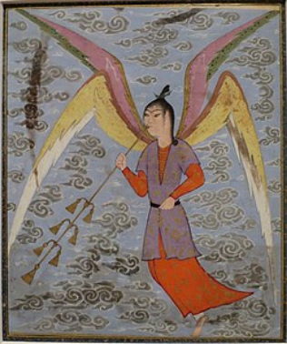
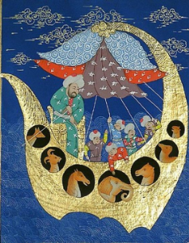
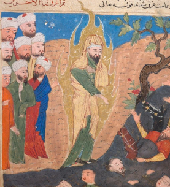
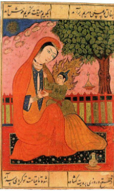
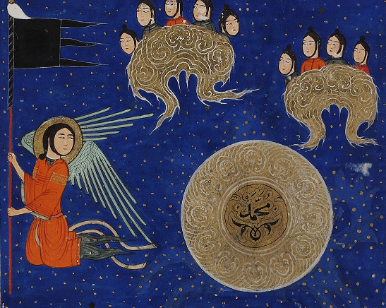
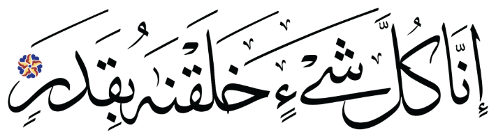
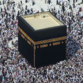

1. There is only one God
Muslims are more than ordinary Monotheists. They are absolute and pure Monotheists. They reject any ideas about God that divides him up into parts or talks about different aspects of him. For Muslims God is ONE!
2. Angels

Muslims believe that angels were the first creation of God. Muslims believe that God’s greatness means he does not communicate directly with humans and so he passed messages to his chosen prophets via the angels. Angels also tell Allah about the behaviour of humans.
3. God speaks to people through prophets



Muslims believe that God speaks to people through chosen men called prophets. Some examples of people that Muslims believe were prophets include: Adam, Noah, Abraham, Moses, Jesus, and Muhammad.
4. The Quran
Muslims believe that while God has revealed many sacred books, such as the Torah and the Bible, the books have been changed over time. They believe the one true book from God is the holy Quran which was revealed to Muhhamud.
Scripture - Holy writings
5. Judgement

Muslims believe that on the Day of Judgment, humans will be judged for their actions in this life; those who followed God's guidance will be rewarded with paradise; those who rejected God's guidance will be punished with hell.
6. Predestination

Muslims believe in predestination this means that they think everything in the universe follows God’s master plan. According to Islam, whatever happens in one's life is decided by God.This concept does not eliminate "free will;" since humans do not have knowledge of God's will, they do have freedom of choice.
7. Islam - Facts
- Islam is one of the largest religions in the world, ¼ of all people are Muslim.
- The name means “peace”
- A member of the religion is called a muslim.
- Islam is monotheistic.
- The “final prophet” of Islam was Muhhamud.
- A Muslim house of worship is called a mosque.
- A muslim religious leader is called a imam.
- A popular symbol for Islam is a moon with a star
